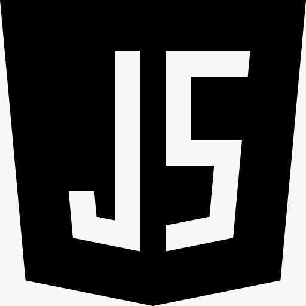

¿Te interesa el desarrollo web?
Prueba este curso gratuito en internet

Con este curso sin coste te introducirás en el diseño de páginas web de manera profesional. En la primera parte del curso aprenderás cómo nació la Web y cómo ha llegado a ser lo que es hoy. Serás capaz de crear páginas web correctas de manera profesional utilizando HTML5. La certificación muestra a las empresas que tienes un buen dominio de los conceptos básicos del desarrollo web. También puedes adjuntarla a tu CV y subirla fácilmente a tu perfil de LinkedIn. La certificación muestra que tienes conocimientos sobre el mundo digital y ganas de aprender, dos cualidades fundamentales en el entorno empresarial actual. Si demuestras que tienes estas cualidades y aplicas los conocimientos adquiridos durante el curso, te será más fácil encontrar el trabajo que quieres.
Las hojas de estilo en cascada (CSS) se utilizan para dar formato al diseño de una página web. Con CSS, puede controlar el color, la fuente, el tamaño del texto, el espaciado entre los elementos, cómo se colocan y diseñan los elementos, qué imágenes de fondo o colores de fondo se utilizarán, diferentes pantallas para diferentes dispositivos y tamaños de pantalla, ¡y mucho más! La palabra en cascada significa que un estilo aplicado a un elemento primario también se aplicará a todos los elementos secundarios dentro del padre. Por lo tanto, si establece el color del texto del cuerpo en "azul", todos los encabezados, párrafos y otros elementos de texto dentro del cuerpo también obtendrán el mismo color (a menos que especifique algo más).



JavaScript a menudo abreviado JS, es un lenguaje de programación que es una de las tecnologías centrales de la World Wide Web, junto con HTML y CSS. Más del 97 % de los sitios web utilizan JavaScript en el lado del cliente para el comportamiento de la página web,[12] a menudo incorporando bibliotecas de terceros. [13] Todos los principales navegadores web tienen un motor JavaScript dedicado para ejecutar el código en los dispositivos de los usuarios. JavaScript es un lenguaje compilado de alto nivel, a menudo justo a tiempo, que cumple con el estándar ECMAScript. [14] Tiene escritura dinámica, orientación a objetos basada en prototipos y funciones de primera clase. Es multiparadigma, compatible con estilos de programación basados en eventos, funcionales e imperativos. Tiene interfaces de programación de aplicaciones (API) para trabajar con texto, fechas, expresiones regulares, estructuras de datos estándar y el Modelo de objetos de documento (DOM).El estándar ECMAScript no incluye ninguna entrada/salida (E/S), como instalaciones de redes, almacenamiento o gráficos. En la práctica, el navegador web u otro sistema de tiempo de ejecución proporciona API de JavaScript para E/S.